1. Introducción
Este documento presenta un análisis secuencial:
- Recodificación: Creación de gradientes de compromiso.
- Tamizaje Bivariado: Identificación de variables significativas.
- Modelado Multivariado: Tablas de regresión comparativas y gráficos de probabilidad.
2. Carga y Recodificación
rdata_file <- here("objects", "datos_recodificados_con_lca.RData")
if (!file.exists(rdata_file)) {
stop("ERROR: No se encontró el archivo: ", rdata_file)
}
load(rdata_file)
# --- RECODIFICACIÓN EXPERTA (Lógica Jerárquica) ---
datos <- datos %>%
mutate(
# CARNE
nivel_compromiso_carne = case_when(
as.numeric(A6A) == 3 ~ 4,
as.numeric(A6A) == 2 & (as.numeric(A6B1_1) == 1 | as.numeric(A6B2_2) == 1) ~ 3,
as.numeric(A6A) == 2 ~ 2,
as.numeric(A6A) == 1 ~ 1,
TRUE ~ NA_real_
),
# INTERNET
nivel_compromiso_internet = case_when(
as.numeric(A7A) == 3 ~ 4,
as.numeric(A7A) == 2 & (as.numeric(A7B1_1) == 1 | as.numeric(A7B2_1) == 1) ~ 3,
as.numeric(A7A) == 2 ~ 2,
as.numeric(A7A) == 1 ~ 1,
TRUE ~ NA_real_
)
) %>%
mutate(
nivel_compromiso_carne = factor(nivel_compromiso_carne, levels = 1:4,
labels = c("1. Resistencia", "2. Adaptación Privada",
"3. Compromiso Eco-Fiscal", "4. Abandono Radical")),
nivel_compromiso_internet = factor(nivel_compromiso_internet, levels = 1:4,
labels = c("1. Resistencia", "2. Adaptación Privada",
"3. Compromiso Eco-Fiscal", "4. Abandono Radical"))
)3. Análisis Bivariado
Se ha optado por transformar las combinaciones de conducta y disposición a pagar en una variable ordinal de 4 niveles por tres razones estadísticas y sociológicas fundamentales:
Poder Estadístico y Robustez: Las categorías intermedias originales (ej. “Status Quo + Pagar Triple”) presentaban frecuencias marginales extremadamente bajas (\(n < 30\)), lo que viola los supuestos de las pruebas de Chi-cuadrado y genera inestabilidad en modelos de regresión. La nueva categorización garantiza grupos robustos con \(n\) suficiente para el análisis inferencial.
Identificación de la “Adaptación Privada” (Nivel 2): El análisis exploratorio reveló que el grupo mayoritario (~28%) está dispuesto a modificar su conducta personal (consumir menos) pero rechaza los mecanismos fiscales (impuestos). Este grupo quedaba oculto o mal clasificado en escalas binarias tradicionales. La categoría 2 captura explícitamente este fenómeno de “individualización de la responsabilidad sin costo fiscal”.
Linealidad del Compromiso (Gradiente): La nueva variable ordena teóricamente la intensidad del sacrificio percibido:
- Nivel 1: Sin costo (Status Quo).
- Nivel 2: Costo de hábito / estilo de vida.
- Nivel 3: Costo de hábito + Costo económico.
- Nivel 4: Costo máximo (Abandono total).
Variable: nivel_compromiso_carne
|
|
|
|
|
|---|---|---|---|---|
| Clase 1 (59.7%) | 90 | 355 | 422 | 343 |
| Clase 2 (13%) | 12 | 75 | 72 | 48 |
| Clase 3 (27.4%) | 50 | 125 | 155 | 157 |
Test: Chi-sq Pearson | p-value: 0.01484
RESULTADO SIGNIFICATIVO: Se incluirá en modelo multivariado.
Variable: nivel_compromiso_internet
|
|
|
|
|
|---|---|---|---|---|
| Clase 1 (59.7%) | 321 | 353 | 452 | 151 |
| Clase 2 (13%) | 54 | 63 | 79 | 18 |
| Clase 3 (27.4%) | 121 | 160 | 179 | 49 |
Test: Chi-sq Pearson | p-value: 0.5113
Relación no significativa.
Variable: P5_RE_macro
| Hogares_Ciudadania | Empresas | Estado | Todos_Otras | |
|---|---|---|---|---|
| Clase 1 (59.7%) | 447 | 427 | 69 | 334 |
| Clase 2 (13%) | 73 | 70 | 10 | 61 |
| Clase 3 (27.4%) | 167 | 166 | 27 | 149 |
Test: Chi-sq Pearson | p-value: 0.8965
Relación no significativa.
Variable: P6_RE_macro
| Hogares_Ciudadania | Empresas | Estado | Todos_Otras | |
|---|---|---|---|---|
| Clase 1 (59.7%) | 388 | 94 | 399 | 396 |
| Clase 2 (13%) | 68 | 20 | 65 | 61 |
| Clase 3 (27.4%) | 137 | 43 | 162 | 167 |
Test: Chi-sq Pearson | p-value: 0.6614
Relación no significativa.
Variable: P8_high
| Bajo | Alto | |
|---|---|---|
| Clase 1 (59.7%) | 482 | 795 |
| Clase 2 (13%) | 82 | 132 |
| Clase 3 (27.4%) | 206 | 303 |
Test: Chi-sq Pearson | p-value: 0.5638
Relación no significativa.
Variable: P3_10_high
| Bajo | Alto | |
|---|---|---|
| Clase 1 (59.7%) | 464 | 813 |
| Clase 2 (13%) | 78 | 136 |
| Clase 3 (27.4%) | 180 | 329 |
Test: Chi-sq Pearson | p-value: 0.9224
Relación no significativa.
Variable: P9_6_high
| Bajo | Alto | |
|---|---|---|
| Clase 1 (59.7%) | 343 | 934 |
| Clase 2 (13%) | 42 | 172 |
| Clase 3 (27.4%) | 148 | 361 |
Test: Chi-sq Pearson | p-value: 0.03076
RESULTADO SIGNIFICATIVO: Se incluirá en modelo multivariado.
Variable: A5_1_want_less
| Otro | Menos | |
|---|---|---|
| Clase 1 (59.7%) | 470 | 807 |
| Clase 2 (13%) | 90 | 124 |
| Clase 3 (27.4%) | 223 | 286 |
Test: Chi-sq Pearson | p-value: 0.01538
RESULTADO SIGNIFICATIVO: Se incluirá en modelo multivariado.
Variable: P9_5_high
| Bajo | Alto | |
|---|---|---|
| Clase 1 (59.7%) | 696 | 581 |
| Clase 2 (13%) | 117 | 97 |
| Clase 3 (27.4%) | 270 | 239 |
Test: Chi-sq Pearson | p-value: 0.8446
Relación no significativa.
4. Modelado Multivariado (Variables Significativas)
En esta sección se ajustan modelos Multinomiales controlando por Edad y Grupo Socioeconómico.
Las tablas a continuación presentan los Odds Ratios (OR).
- Referencia: Clase 1 (59.7%).
- Los coeficientes se presentan en columnas lado a lado para facilitar la comparación.
Predictor: nivel_compromiso_carne
Tabla de Regresión (Odds Ratios)
| Variable | OR | 95% CI | p-valor |
|---|---|---|---|
| Clase 2 (13%) | |||
| nivel_compromiso_carne |
|
|
|
| 1. Resistencia | — | — |
|
| 2. Adaptación Privada | 1.47 | 0.72, 3.04 | 0.3 |
| 3. Compromiso Eco-Fiscal | 1.26 | 0.62, 2.58 | 0.5 |
| 4. Abandono Radical | 0.96 | 0.45, 2.06 |
0.9 |
| Edad en rangos | 1.01 | 0.91, 1.13 | 0.8 |
| GSE Abreviado | 1.08 | 0.92, 1.27 | 0.3 |
| Clase 3 (27.4%) | |||
| nivel_compromiso_carne |
|
|
|
| 1. Resistencia | — | — |
|
| 2. Adaptación Privada | 0.58 | 0.37, 0.91 | 0.019 |
| 3. Compromiso Eco-Fiscal | 0.55 | 0.35, 0.85 | 0.007 |
| 4. Abandono Radical | 0.84 | 0.54, 1.32 | 0.4 |
| Edad en rangos | 0.96 | 0.89, 1.04 | 0.3 |
| GSE Abreviado | 1.03 | 0.91, 1.16 | 0.6 |
| Abreviaciones: CI = Intervalo de confianza, OR = Razón de probabilidades | |||
Probabilidades Predichas (Visualización)
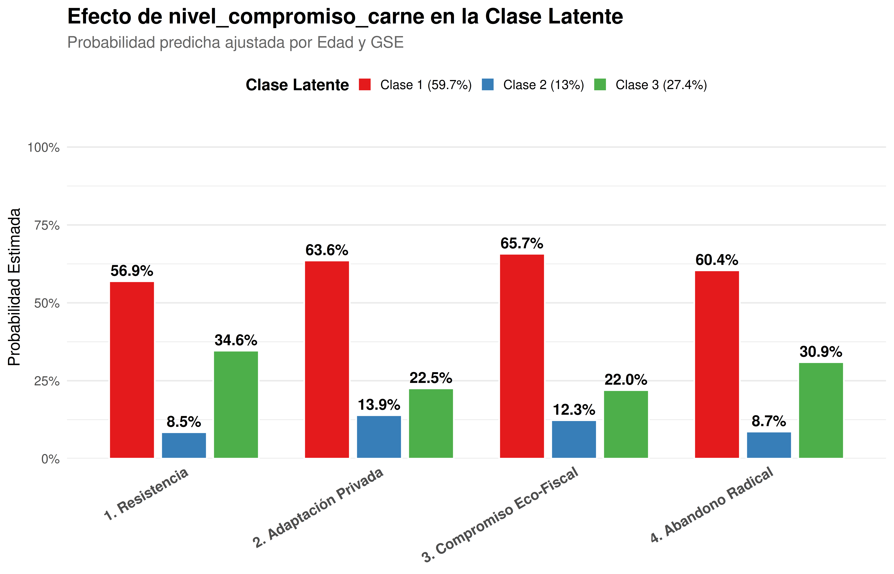
Predictor: P9_6_high
Tabla de Regresión (Odds Ratios)
| Variable | OR | 95% CI | p-valor |
|---|---|---|---|
| Clase 2 (13%) | |||
| P9_6_high |
|
|
|
| Bajo | — | — |
|
| Alto | 1.42 | 0.96, 2.12 | 0.081 |
| Edad en rangos | 1.01 | 0.91, 1.12 | 0.8 |
| GSE Abreviado | 1.05 | 0.90, 1.23 | 0.5 |
| Clase 3 (27.4%) | |||
| P9_6_high |
|
|
|
| Bajo | — | — |
|
| Alto | 1.00 | 0.77, 1.31 |
0.9 |
| Edad en rangos | 0.96 | 0.89, 1.04 | 0.3 |
| GSE Abreviado | 1.04 | 0.93, 1.17 | 0.5 |
| Abreviaciones: CI = Intervalo de confianza, OR = Razón de probabilidades | |||
Probabilidades Predichas (Visualización)
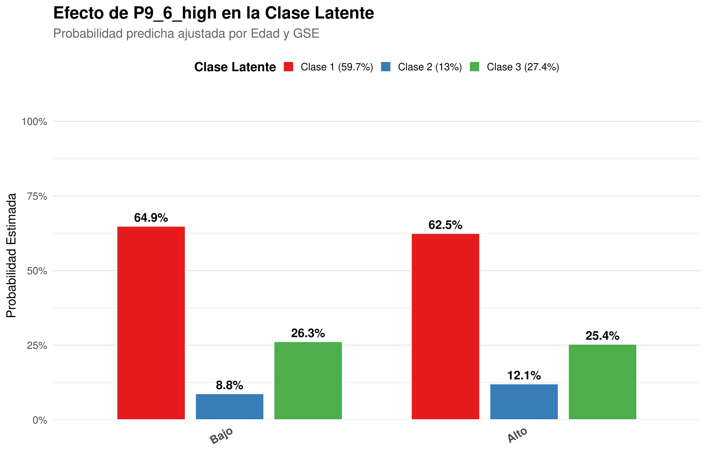
Predictor: A5_1_want_less
Tabla de Regresión (Odds Ratios)
| Variable | OR | 95% CI | p-valor |
|---|---|---|---|
| Clase 2 (13%) | |||
| A5_1_want_less |
|
|
|
| Otro | — | — |
|
| Menos | 0.83 | 0.60, 1.16 | 0.3 |
| Edad en rangos | 1.01 | 0.91, 1.12 | 0.8 |
| GSE Abreviado | 1.06 | 0.90, 1.24 | 0.5 |
| Clase 3 (27.4%) | |||
| A5_1_want_less |
|
|
|
| Otro | — | — |
|
| Menos | 0.74 | 0.58, 0.94 | 0.013 |
| Edad en rangos | 0.96 | 0.89, 1.04 | 0.3 |
| GSE Abreviado | 1.04 | 0.93, 1.17 | 0.5 |
| Abreviaciones: CI = Intervalo de confianza, OR = Razón de probabilidades | |||
Probabilidades Predichas (Visualización)
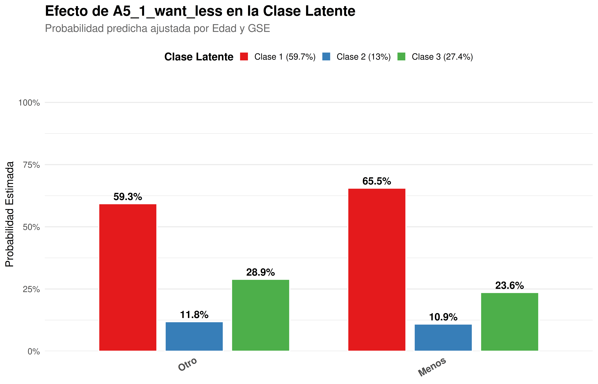
5. Benchmark y caracterizacion
5. Benchmark de Dimensiones Ambientales (P3)
Variable: P3_1_high
| High | Low | |
|---|---|---|
| Clase 1 (59.7%) | 941 | 336 |
| Clase 2 (13%) | 153 | 61 |
| Clase 3 (27.4%) | 400 | 109 |
Test: Chi-sq Pearson | p-value: 0.05347
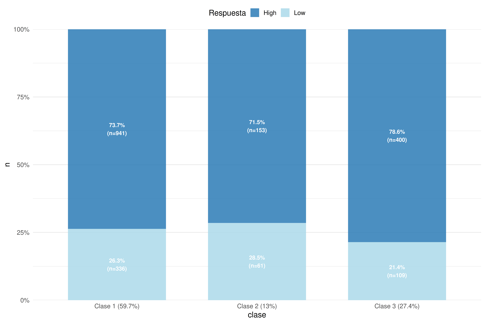
Variable: P3_2_high
| High | Low | |
|---|---|---|
| Clase 1 (59.7%) | 923 | 354 |
| Clase 2 (13%) | 157 | 57 |
| Clase 3 (27.4%) | 384 | 125 |
Test: Chi-sq Pearson | p-value: 0.4143
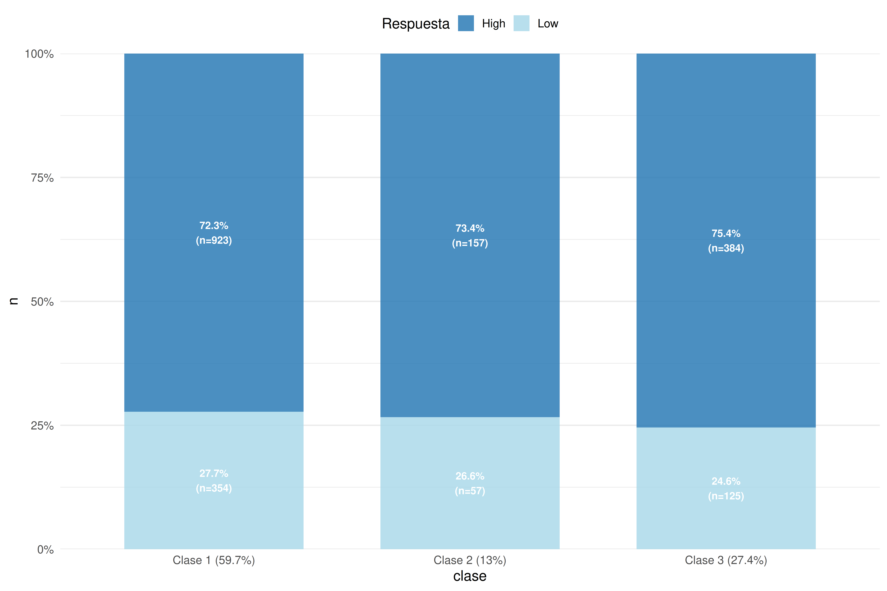
Variable: P3_3_high
| High | Low | |
|---|---|---|
| Clase 1 (59.7%) | 1076 | 201 |
| Clase 2 (13%) | 188 | 26 |
| Clase 3 (27.4%) | 438 | 71 |
Test: Chi-sq Pearson | p-value: 0.2939
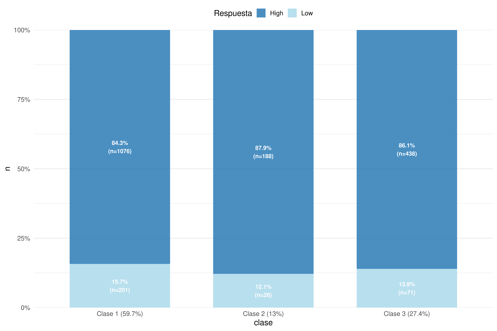
Variable: P3_4_high
| High | Low | |
|---|---|---|
| Clase 1 (59.7%) | 1018 | 259 |
| Clase 2 (13%) | 182 | 32 |
| Clase 3 (27.4%) | 414 | 95 |
Test: Chi-sq Pearson | p-value: 0.1714

Variable: P3_5_high
| High | Low | |
|---|---|---|
| Clase 1 (59.7%) | 921 | 356 |
| Clase 2 (13%) | 157 | 57 |
| Clase 3 (27.4%) | 389 | 120 |
Test: Chi-sq Pearson | p-value: 0.1824

Variable: P3_6_high
| High | Low | |
|---|---|---|
| Clase 1 (59.7%) | 1043 | 234 |
| Clase 2 (13%) | 178 | 36 |
| Clase 3 (27.4%) | 424 | 85 |
Test: Chi-sq Pearson | p-value: 0.6887
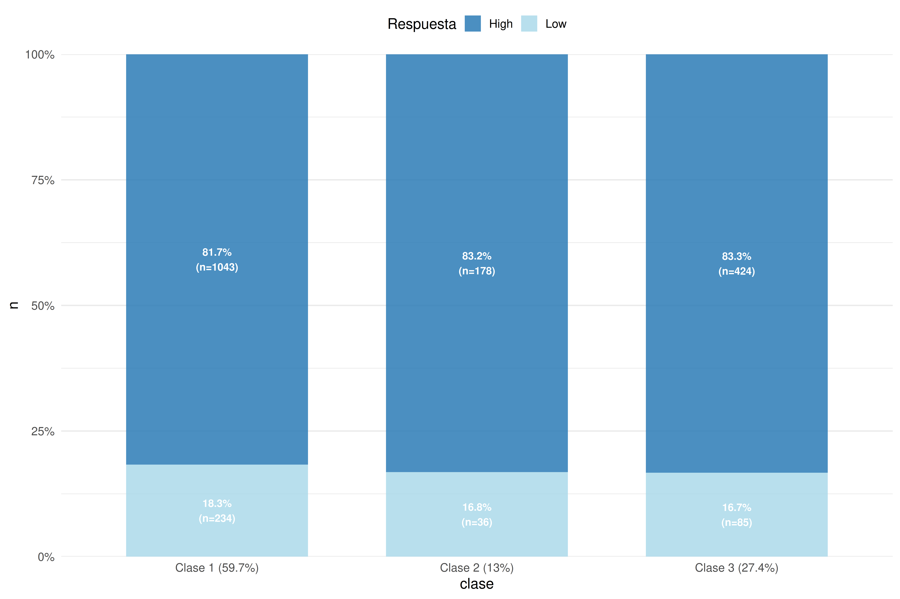
Variable: P3_7_high
| High | Low | |
|---|---|---|
| Clase 1 (59.7%) | 800 | 477 |
| Clase 2 (13%) | 139 | 75 |
| Clase 3 (27.4%) | 331 | 178 |
Test: Chi-sq Pearson | p-value: 0.5867
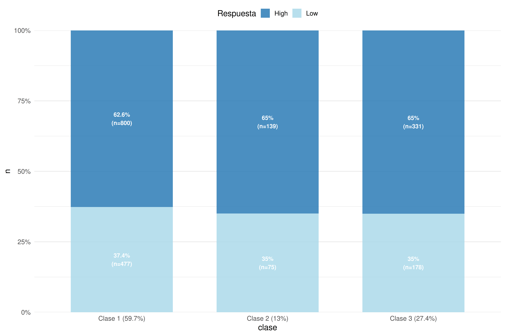
Variable: P3_8_high
| High | Low | |
|---|---|---|
| Clase 1 (59.7%) | 910 | 367 |
| Clase 2 (13%) | 159 | 55 |
| Clase 3 (27.4%) | 364 | 145 |
Test: Chi-sq Pearson | p-value: 0.6492
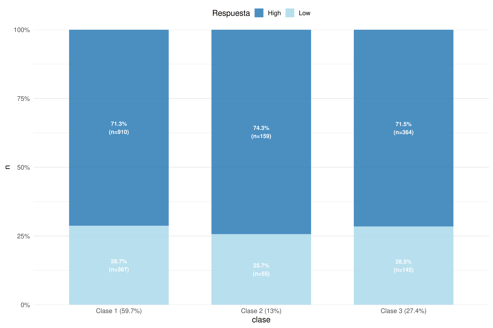
Variable: P3_9_high
| High | Low | |
|---|---|---|
| Clase 1 (59.7%) | 996 | 281 |
| Clase 2 (13%) | 170 | 44 |
| Clase 3 (27.4%) | 394 | 115 |
Test: Chi-sq Pearson | p-value: 0.8376
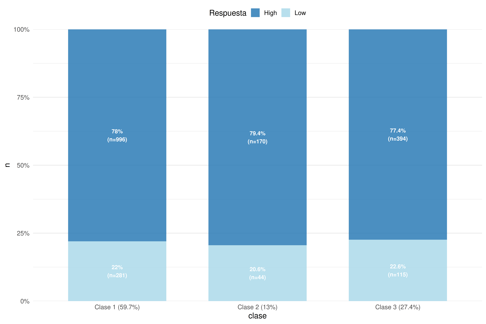
Variable: P3_10_high
| High | Low | |
|---|---|---|
| Clase 1 (59.7%) | 426 | 851 |
| Clase 2 (13%) | 69 | 145 |
| Clase 3 (27.4%) | 167 | 342 |
Test: Chi-sq Pearson | p-value: 0.931
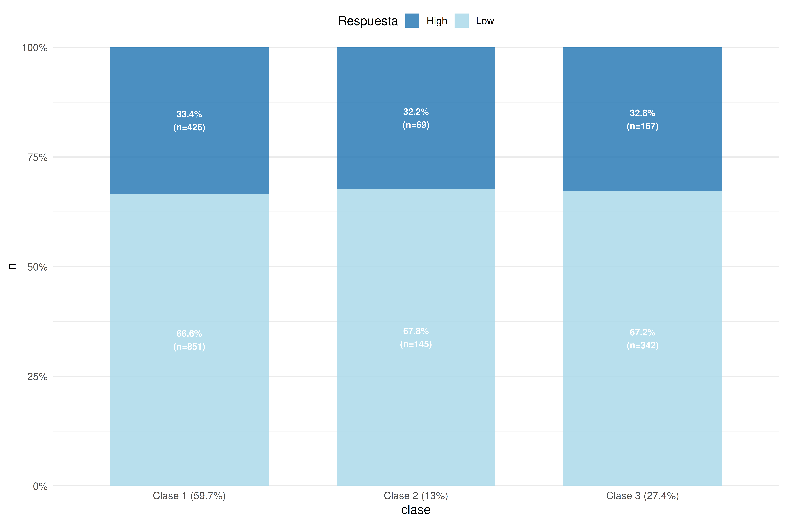
6. Caracterización Sociodemográfica de los Perfiles
| Tabla: Caracterización Sociodemográfica por Clase Latente | ||||
|---|---|---|---|---|
| Distribución porcentual de covariables estructurales y políticas | ||||
| Característica |
Perfiles LCA
|
p-valor2 | ||
| Clase 1 (59.7%) N = 1,2771 |
Clase 2 (13%) N = 2141 |
Clase 3 (27.4%) N = 5091 |
||
| Sexo | >0.9 | |||
| Hombre | 803 (63%) | 132 (62%) | 316 (62%) | |
| Mujer | 474 (37%) | 82 (38%) | 193 (38%) | |
| Tramo de Edad | >0.9 | |||
| 18 a 24 años | 198 (16%) | 34 (16%) | 87 (17%) | |
| 25 a 34 años | 279 (22%) | 48 (22%) | 105 (21%) | |
| 35 a 44 años | 229 (18%) | 41 (19%) | 95 (19%) | |
| 45 a 54 años | 218 (17%) | 34 (16%) | 95 (19%) | |
| 55 a 64 años | 203 (16%) | 29 (14%) | 72 (14%) | |
| 65 años o más | 150 (12%) | 28 (13%) | 55 (11%) | |
| Clase Social (Categoría) | 0.8 | |||
| Baja | 332 (26%) | 47 (22%) | 121 (24%) | |
| Media-baja | 439 (34%) | 78 (36%) | 183 (36%) | |
| Media | 317 (25%) | 57 (27%) | 126 (25%) | |
| Media-alta | 120 (9.4%) | 24 (11%) | 56 (11%) | |
| Alta | 69 (5.4%) | 8 (3.7%) | 23 (4.5%) | |
| Posición Política | 0.7 | |||
| Izquierda | 246 (36%) | 46 (40%) | 104 (38%) | |
| Centro | 291 (43%) | 46 (40%) | 105 (39%) | |
| Derecha | 141 (21%) | 23 (20%) | 63 (23%) | |
| Zona de Residencia | 0.3 | |||
| Urbano | 454 (36%) | 93 (43%) | 187 (37%) | |
| Rural | 137 (11%) | 18 (8.4%) | 56 (11%) | |
| Mixto | 686 (54%) | 103 (48%) | 266 (52%) | |
| 1 n (%) | ||||
| 2 prueba chi cuadrado de independencia | ||||
6. Tópicos
# 1. LIBRERÍAS
library(stm)
library(quanteda)
library(tidytext)
library(dplyr)
library(ggplot2)
library(stringr)
library(tidyr)
library(forcats)
cat("\n# 7. Modelamiento de Tópicos: Contenido y Prevalencia\n")7. Modelamiento de Tópicos: Contenido y Prevalencia
# 2. PREPARACIÓN Y LIMPIEZA PROFUNDA
col_texto <- intersect(names(datos), c("P1", "P1_abierta", "frase_sustentabilidad"))[1]
stop_words_custom <- c(
stopwords("es"), "algo", "que", "con", "del", "una", "para", "los", "las", "como",
"esta", "tiene", "puede", "pueda", "mismo", "solo", "cosas", "nada", "manera",
"bien", "sirve", "maneras", "hace", "donde", "cuando", "pero", "estos", "estas"
)
datos_prepro <- datos %>%
rename(texto = all_of(col_texto)) %>%
select(texto, clase_latente_factor) %>%
drop_na(texto) %>%
mutate(texto = str_to_lower(texto),
texto = str_replace_all(texto, "[[:punct:]]", " "),
texto = str_squish(texto))
# 3. CREACIÓN DEL OBJETO STM
corpus_stm <- corpus(datos_prepro, text_field = "texto")
tokens_stm <- tokens(corpus_stm) %>%
tokens_remove(stop_words_custom) %>%
tokens_keep(min_nchar = 4)
dfm_stm <- dfm(tokens_stm) %>%
dfm_trim(min_docfreq = 2)
out <- convert(dfm_stm, to = "stm")
# 4. ESTIMACIÓN DEL MODELO STM (K=4)
# La clase latente predice la probabilidad de cada tópico
modelo_stm <- stm(documents = out$documents,
vocab = out$vocab,
data = out$meta,
K = 4,
prevalence =~ clase_latente_factor,
verbose = FALSE,
init.type = "Spectral")
# ------------------------------------------------------------------------------
# 5. VISUALIZACIÓN A: CONTENIDO DE LOS TÓPICOS (BETA)
# ------------------------------------------------------------------------------
td_beta <- tidy(modelo_stm, matrix = "beta")
p_beta <- td_beta %>%
group_by(topic) %>%
slice_max(beta, n = 10) %>%
ungroup() %>%
mutate(term = reorder_within(term, beta, topic)) %>%
ggplot(aes(beta, term, fill = factor(topic))) +
geom_col(show.legend = FALSE) +
facet_wrap(~ paste("Tópico", topic), scales = "free") +
scale_y_reordered() +
labs(title = "Contenido de los Tópicos (Probabilidad Beta)",
subtitle = "Términos que definen cada 'bolsa de sentido'",
x = "Beta (Probabilidad de la palabra en el tópico)", y = NULL) +
theme_minimal(base_size = 13)
print(p_beta)
# ------------------------------------------------------------------------------
# 6. VISUALIZACIÓN B: DIFERENCIAS DISCURSIVAS POR CLASE (GAMMA)
# ------------------------------------------------------------------------------
# Estimación de efectos
efectos <- estimateEffect(1:4 ~ clase_latente_factor,
stmobj = modelo_stm,
metadata = out$meta)
# Extracción manual de datos para ggplot2 (Solución al error 4, 3)
prep <- plot(efectos, "clase_latente_factor", method = "pointestimate", omitPlot = TRUE)
df_efectos <- data.frame()
for (i in seq_along(prep$topics)) {
n_classes <- length(prep$uvals)
temp_df <- data.frame(
topic = rep(prep$topics[i], n_classes),
clase = prep$uvals,
estimate = as.numeric(prep$means[[i]]),
lower = as.numeric(prep$cis[[i]][1, ]),
upper = as.numeric(prep$cis[[i]][2, ])
)
df_efectos <- rbind(df_efectos, temp_df)
}
# Etiquetas dinámicas basadas en los resultados
etiquetas <- c(
"1" = "Tópico 1: Recursos Naturales\n(medio, ambiente, agua)",
"2" = "Tópico 2: Acción Individual\n(reciclaje, cuidar, acciones)",
"3" = "Tópico 3: Bienestar Social\n(bueno, beneficioso, sustento)",
"4" = "Tópico 4: Visión Sistémica\n(tiempo, mantener, perdura)"
)
df_efectos$topic_label <- etiquetas[as.character(df_efectos$topic)]
# Gráfico final de efectos
p_efectos <- ggplot(df_efectos, aes(x = estimate, y = topic_label, color = clase)) +
geom_point(size = 4, position = position_dodge(width = 0.5)) +
geom_errorbarh(aes(xmin = lower, xmax = upper),
height = 0.3, size = 1.1,
position = position_dodge(width = 0.5)) +
scale_color_manual(values = mis_colores) + # Rojo, Azul, Verde
labs(
title = "Diferencias en el Discurso sobre Sustentabilidad",
subtitle = "Probabilidad predicha según Clase Latente (STM con Covariables)",
x = "Probabilidad Estimada del Tópico",
y = NULL, color = "Clase Latente"
) +
theme_minimal(base_size = 15) +
theme(legend.position = "top",
axis.text.y = element_text(face = "bold", color = "black"),
plot.title = element_text(face = "bold"))
print(p_efectos)
Citation
@misc{cantillan2025,
author = {Cantillan, Roberto},
title = {Revisión: {LCA} y {Determinantes} Del {Compromiso}},
date = {2025},
langid = {en},
abstract = {Este documento profundiza en la caracterización
sociológica de perfiles ambientales identificados mediante Modelos
de Clases Latentes (LCA): Ambientalismo Moderado (60\%), Modo de
Vida Imperial (13\%) y Ambientalismo Crítico (27\%). Se propone y
valida un nuevo **Gradiente de Compromiso Ambiental** de cuatro
niveles que permite distinguir entre la *Adaptación Privada* (cambio
conductual sin apoyo fiscal) y el *Compromiso Eco-Fiscal*. Mediante
modelos de regresión logística multinomial ajustados por edad y
nivel socioeconómico, se demuestra que la disposición al sacrificio
personal desvinculada de la responsabilidad fiscal es un predictor
clave para diferenciar los perfiles latentes, revelando tensiones
importantes entre la conducta individual y el apoyo a políticas
estructurales.}
}